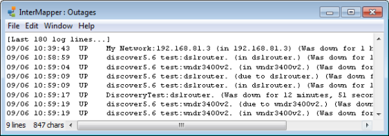

InterMapper summarizes outages that have occurred in the Outages Log. An outage is defined as a device that has gone from the UP state to the DOWN state, and then returned to the UP state. InterMapper tracks the start and end time of the outage, and computes the duration. Each time a device goes DOWN and then comes back UP, an entry is placed in the Outages log.
To open the Outages Log window:

The Outages window shows the start and end time and the duration of outages.
The controls in the Outages Log window are identical to those of the other Event Log windows, and are described on that page.